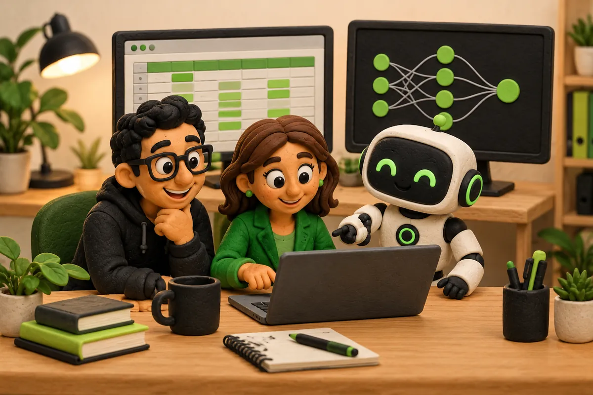
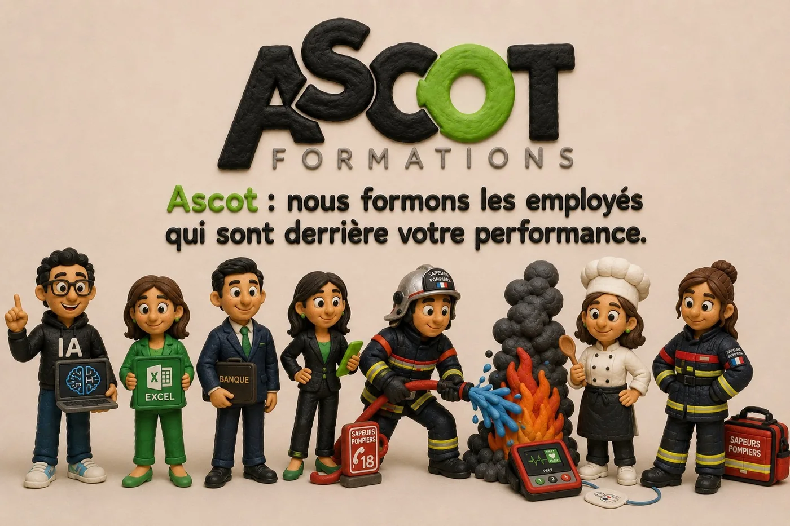
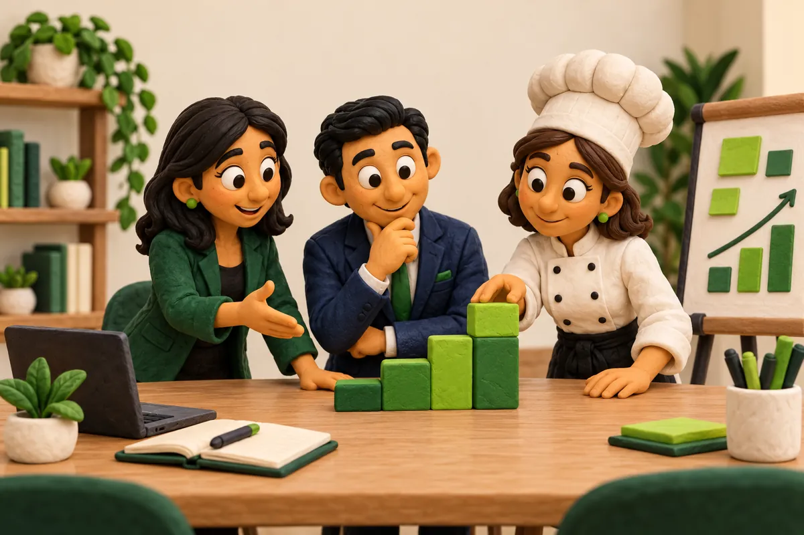
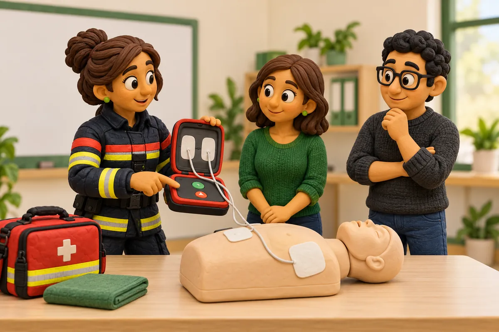

Digital & outils
Prendre en main les outils d’aujourd’hui
Intelligence artificielle, bureautique et Excel : des usages à mettre en pratique dans son métier.
Des compétences concrètes pour faire avancer vos métiers et votre entreprise.

Une première sélection de thématiques, à adapter aux besoins de vos équipes. Chaque parcours se construit avec vos outils et vos situations de travail.

Intelligence artificielle, bureautique et Excel : des usages à mettre en pratique dans son métier.

Développer les compétences professionnelles et accompagner les équipes dans leur quotidien.

Sensibiliser à la prévention et aux situations d’urgence, selon les enjeux de votre activité.
Trois temps, du premier échange au retour au poste.
Vos métiers, vos outils, vos objectifs. Le point de départ, c’est ce dont vos équipes ont besoin.
Des exercices, des mises en situation et des cas concrets pour transformer la théorie en savoir-faire.
Des acquis à réutiliser au travail, pour continuer à progresser après la formation.
Un besoin précis ? Plusieurs métiers à accompagner ? Construisons ensemble un parcours adapté à votre organisation.
Parlez-nous de votre équipe et de ce que vous aimeriez faire évoluer.